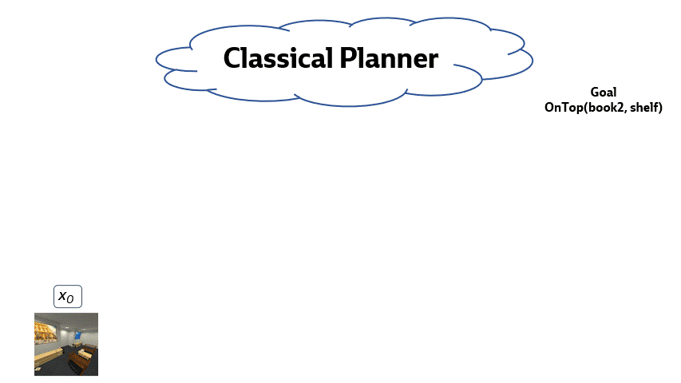

Tom Silver
PhD Candidate at MIT CSAIL

I am a final year PhD student at MIT EECS. My research is motivated by the prospect of broadly-competent, helpful, and intelligent robots that can respond to very high-level commands like “make me a heart-healthy dinner”; learn new skills like “grind fresh pepper”; and learn new concepts like “wilted spinach.” Such robots will be especially transformative for people who cannot otherwise remain independent in their homes. Most of my work is at the intersection of automated planning and machine learning: learning to plan and planning to learn while making efficient use of limited data and time. I often use techniques from task and motion planning, program synthesis, and neuro-symbolic machine learning.
At MIT, I am advised by Leslie Kaelbling and Joshua Tenenbaum and am a member of the Learning and Intelligent Systems group and the Computational Cognitive Science group. Previously I was a researcher at Vicarious AI. I received my B.A. from Harvard with highest honors in computer science and mathematics in 2016. I have also interned at Google Research (Brain Robotics) and currently split my time between MIT and the Boston Dynamics AI Institute. I am grateful for support from an NSF Graduate Research Fellowship and an MIT Presidential Fellowship.
research areas

Learning abstractions for hierarchical planning
Abstractions allow robots to first focus on the high-level aspects of a task before getting bogged down in details. We would like a robot to automatically learn abstractions—state abstractions (predicates) and action abstractions (skills)—that are specialized for planning in its domain. We are especially interested in abstractions for task and motion planning. (Image credit: Nishanth Kumar)
Program synthesis for planning
We want robots to be like self-supervised software engineers, writing their own code and growing libraries that can be used to solve increasingly difficult decision-making problems. We use LLMs, Bayesian program learning, inductive logic programming, SAT solvers, and heuristic search to synthesize programs.
Learning to accelerate planning
Even with good abstractions, online planning can be slow, especially in high-dimensional environments with many objects. Robots should learn to plan better and faster over time. We can automatically accelerate planning by learning object-centric task abstractions, learning to self-impose constraints, or learning heuristics.
Planning to learn
Robots should plan to practice to get better at planning. They should rapidly learn to specialize to the objects, goals, preferences, and constraints that are unique to their deployment. We can plan to learn samplers, predicates, and operators for bilevel planning. Our ultimate goal is to create a virtuous cycle of learning and planning.